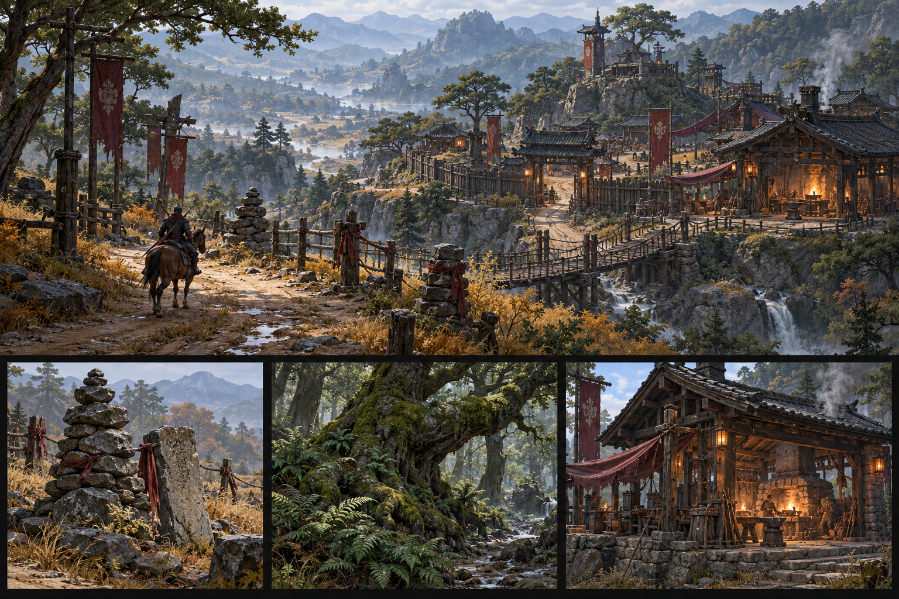

Game concept book · October 2026
A dangerous road.
A stronger character.
Ironfield's world, creatures and progression in separate illustrated design sheets.
Your rules are fixed. New balance numbers and future features are marked as proposals. Current mob facts come from the game's resources.

Game systems and world
Vision
The hunting, preparation and progression loop; fixed rules and first-release scope.
Sheet 01Smithing
Nine upgrade steps, exact odds and ingredients, destructive failure and accumulated risk.
Sheet 02Equipment
Equipment tiers, base-stat power, matte-to-shiny surfaces and blue/red/violet sparks.
Sheet 03Levels and Stats
Quarter-level stat awards, XP thresholds and distinct VIT/STR/DEX/AGI effects.
Sheet 04Skill Mastery
17 basic ranks, M1–M10 costs and G completion with 55 Mastery Leaves.
Sheet 05Mob Bestiary
37 creature designs with level, tier, EXP, full stats and individual drop rates.
Sheet 06Loot Scaling
Symmetric logarithmic level-gap scaling, precise examples and reward scope.
Sheet 07Fractures
Destructible cores, defender waves, materials and the skill-mastery farming route.
Sheet 08World Regions
Briarwood, Cinderfall and future fen/heights, roads, landmarks and hunting bands.
Sheet 09Classes and Combat
Four classes, eight paths, 48 skill designs and readable combat decisions.
Sheet 10Quests and Town
Town service roles, the current quest chain and introductory session targets.
Sheet 11Economy and Crafting
Exact trophy inputs, replacement gear, conversions, relic crafting and gold sinks.
Sheet 12Mounts and Travel
Horse anatomy, saddle/rider fit, unlocks, travel and render acceptance.
Sheet 13UI and Feedback
XP milestones, allocation, mastery, destructive upgrade quotes and accessible feedback.
Sheet 14Art Audio Production
Material language, export reviews, rendering budgets, audio and art provenance.
Sheet 15Endgame and Online
Max-level goals, boss routes and proposed parties, trading, guilds and online authority.